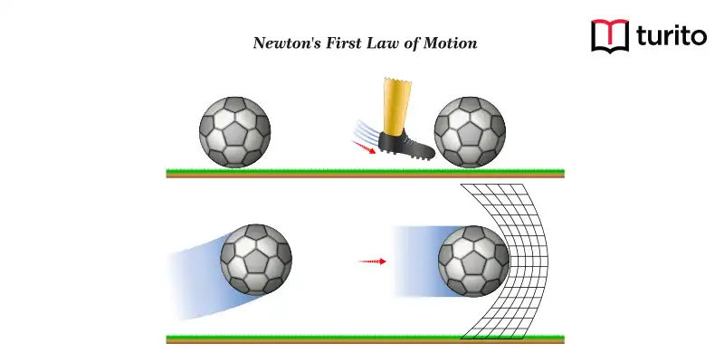

The laws of motion, formulated by Sir Isaac Newton, describe the relationship between the motion of an object and the forces acting on it. These laws are fundamental to understanding classical mechanics.
An object at rest remains at rest and an object in motion continues in motion with the same speed and direction unless acted upon by an unbalanced external force.
The rate of change of momentum of an object is directly proportional to the applied force and takes place in the direction in which the force acts. (F = ma)
For every action, there is an equal and opposite reaction. Forces always occur in pairs.
Inertia is the tendency of an object to resist a change in its state of motion or rest. It depends on mass—the greater the mass, the greater the inertia.
FBD is a diagram showing all the forces acting on a single object. It is essential for solving problems involving forces and motion.
F = ma
W = mg
f = μN
Solution: F = ma ⇒ a = F/m = 20/5 = 4 m/s²
Solution: F = ma = 2 × 3 = 6 N
Solution: Book applies force (weight) on table. Table applies equal and opposite normal reaction upward.
Solution: f = μN = 0.2 × 50 = 10 N